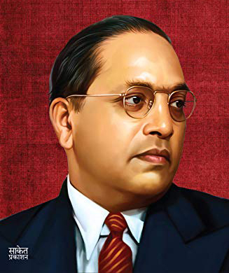

Timeline of Father

Dr. Bhimrao Ramji Ambedkar
1891: In 14 April
Bhimrao is born in the British-founded town of Mhow in Central Provinces (today’s Madhya Pradesh) to Ramji Sakpal and Bhimabai;
Mhow
1897:
Bhimabai (Bhimrao’s mother) passes away in Satara.
1900: In November,
Bhimrao joins the government high school in Satara. He got his primary education at a school in Dapoli, a small town in Ratnagiri
District, in Konkan Maharashtra.
1904:
Bhimrao joins the Elphinstone High School, Bombay.
1907:
Matriculation from Elphinstone High School, Bombay, with 382 marks out of 750. Marriage with Rami (Ramabai), daughter of Bhiku
Walangkar.
1912:
Graduation from Elphinstone College, affiliated to University of Bombay. His BA has papers in Persian and English. He scores 449 out
of 1000 marks. While he is studying for his BA, Bhim’s father runs out of funds. Keluskar helps Bhim get a scholarship of Rs 25
rupees a month from the Maharaja of Baroda. In December, son Yeshwant is born.
1913:
Joins Baroda State Force as a lieutenant. On 2 February, Bhim’s father, Ramji Sakpal, passes away. In July, Ambedkar arrives in New
York for higher studies in Columbia University.
1915: On June 5,
Ambedkar is awarded an MA. He majors in Economics; Sociology, History, Philosophy, Anthropology and Politics were the other subjects
of study. For his MA, he wrote a thesis titled “Ancient Indian Commerce”.
1916: On 9 May,
He reads a paper titled “Castes in India: Their Mechanism, Genesis and Development” at Dr Alexander Goldenweiser’s anthropology
seminar. It is published in Indian Antiquary, Vol XII (New York) in May 1917.
1917:
He starts working on his thesis, but he is informed that the period of his scholarship is over. He returns to India after spending a
year in London working on the thesis for the MSc (Economics).
1918:
Ambedkar becomes Professor of Political Economy in the Sydenham College of Commerce and Economics, in Bombay.
1919: He testifies both orally and in writing before the Southborough Committee, which is investigating franchise matters
in the light of the planned Montagu-Chelmsford reforms. Ambedkar demands separate electorate and reserved seats for Depressed
Classes, in proportion to their population.
1920:
Ambedkar launches Mook Nayak (Leader of the Dumb) newspaper.
In March, Ambedkar presides over a conference of Untouchables, in Mangaon in Kolhapur state. Shahuji Maharaj is in attendance,
too.
1921: On 21 June, LSE awards Ambedkar an MSc in Economics. His thesis is titled “Provincial Decentralization of Imperial
Finance in British India”.
1922: In October, he completes his thesis, “The Problem of the Rupee”, and submits to LSE. He is also called to the Bar.
1923:
Ambedkar travels to Bonn University, Germany.
In April, he returns to India. Ambedkar decides to start practising law.
1924: In June, he starts practising in the Bombay High Court. On 20 July, he launches the Bahishkrit Hitakarini Sabha
(Group for the Wellbeing of the Excluded), to mobilize Depressed Classes. Its motto is “Educate, Agitate, Organise”. Ambedkar is the
chairman of the managing committee.
1925: Ambedkar’s LSE MA thesis as The Evolution of Provincial Finance in British India is published by P.S. King & Son
Ltd; it is dedicated to the Gaekwad of Baroda (“for his help in the matter of my education”), and has an introduction by Columbia’s
Prof Edward Seligman.
1926:
Ambedkar submits evidence before the Royal Commission on Indian Currency (Hilton Young Commission)
The Governor of Bombay nominates him as a member of the Bombay Legislative Council.
He leads the satyagraha in Mahad to secure the right of Untouchables to draw water from the Chavdar Tank. He ceremonially takes a
drink of water from the tank, after which local caste Hindus run riot, and Brahmins take elaborate measures for the ritual
purification of the tank.
1927: On 3 April, Ambedkar launches his Marathi fortnightly Bahishkrit Bharat. He himself is the editor.
On June 8,
He is formally awarded a PhD by Columbia University. His PhD thesis is titled The Evolution of Provincial Finance in British India
In September, he establishes “Samaj Samata Sangh”.
On 2 October,
He presides over a conference of the students from the Depressed Classes in Poona.
On 24 December,
He addresses a second Depressed Classes Conference in Mahad.
1928:
Dr Ambedkar becomes professor at the Government Law College, Bombay;
1929:
Dr Ambedkar closes his second journal, Bahiskrit Bharat (“Excluded India”), which started in 1927, and replaces it with Janata (“The
People”).
On October 23,
During a visit to Chalisgaon, he meets with an accident, and is confined to bed until the last week of December.
1930:
In March, he leads a satyagrah at the Kalaram Temple in Nasik to secure for Untouchables the right of entry into the temple.
On
August 8,
Dr Ambedkar presides over the Depressed Classes Congress in Nagpur, and delivers a speech favouring Dominion
status.
Dr Ambedkar is invited by the Viceroy to be part of the First Round Table Conference, and leaves for London in October.
1931:
Ambedkar and Gandhi attend the Second Round Table Conference held from 7 September- 1 December
1932: The All India Depressed Classes Conference, held at Kamptee, near Nagpur, on 6 May, backs Dr Ambedkar’s demand for
separate electorates for the Untouchables, rejecting compromises proposed by others.
By September 23,
Though, a very reluctant Dr Ambedkar is forced to accept joint electorates, with Gandhi fasting unto death in Yerwada jail, Poona,
against the separate electorates granted to the Depressed Classes by Ramsay MacDonald’s Communal Award. The result is the Poona Pact.
(In 1933, Gandhi replaces his newspaper “Young India” with “Harijan”, and undertakes a 21-day “self-purification fast” against
untouchability.)
1933-34:
Dr Ambedkar participates in the work of the Joint Committee on Indian Legislative Reform (Also Indian Constitutional reform),
examining a number of significant witnesses. He also writes a treatise on the Indian Army.
1935: On May 26, Dr Ambedkar’s wife Ramabai dies after a long illness. In June, Ambedkar is appointed as principal of
Government Law College, Bombay. He is also appointed the Perry professor of Jurisprudence.
On October 13, Dr Ambedkar presides over the Yeola Conversion Conference, held in Yeola, in Nashik district. He advises
the Depressed Casses to abandon all agitation for temple-entry privileges; instead, he says, they should leave Hinduism entirely and
embrace another religion. He vows, “I solemnly assure you that I will not die as a Hindu.”
1936: He writes, but does not publish, a brief, moving, and largely autobiographical memoir called Waiting for a
Visa.
On 31 May, Dr Ambedkar addresses a meeting of the Mumbai Elaka Mahar Parishad (Bombay Mahar Society) at Naigaum (Dadar), in Bombay –
the only time he would address an audience of just the people of his community. He speech in Marathi is vivid and poignant.
On 15 June, a conference of Devdasis is held in Bombay to support Dr Ambedkar’s resolution on conversion.
On 18 June, Dr Ambedkar and Dr B.S. Moonje of the Hindu Mahasabha hold talks on conversion.
In August, he founds the Independent Labour Party.
On 18 September Ambedkar deputes 13 men at the Sikh Mission in Amristar to study Sikhism.
1937
Dr Ambedkar publishes the second edition of The Annihilation of Caste, adding a concluding appendix that features a debate with
Gandhi over the speech text. This work would be a bestseller, going through many editions and creating much controversy.
He forms the Municipal Workers’ Union, Bombay.
On 17 February, the first general election under the Government of India Act 1935 is held. Dr Ambedkar is elected member of the
Bombay Legislative Assembly. Dr Ambedkar’s Independent Labour Party wins 17 seats.
On 17 March, Mahad Chavdar tank case is decided, and Depressed Classes are allowed to use public wells and tanks.
Dr Ambedkar receives a grand reception at Chalisgaon railway station.
On 17 September, Dr Ambedkar introduces the Bill to abolish the Mahar Watan in the Assembly.
1938: In January,
Congress introduces a Bill for the amendment of the Local Boards Act in which the Untouchables are defined as Harijans, ie sons of
God. Dr Ambedkar criticizes the nomenclature as in his opinion the change of name would make no real change in their condition.
On 23 January, Dr Ambedkar addresses a Peasants’ Conference in Ahmedabad.
On 12 February, he addresses a historic conference of railway workers at Manmad in Nasik.
In April, he opposes the creation of a separate state of Karnataka in the national interest.
In May, he resigns as principal of Government Law College, Bombay.
In August, he attends a meeting at R.M. Bhatt High School, Bombay, that was held to expose Gandhi’s discriminatory attitude towards
an untouchable man
In September, he speaks on “Industrial Disputes Bill” in Bombay Assembly. He opposes it because it takes away the worker’s right to
strike.
In 6 November, industrial workers go on strike. Dr Ambedkar leads a procession in Mumbai from Kamgar Maidan to Jambori Maidan
(Worli).
On 10 November, he moves a resolution for adoption of birth control measures in the Bombay Assembly.
1939: On 29 January,
He delivers a lecture titled Federation versus Freedom at the Gokhale Institute of Politics and Economics. It is pblished later in
the year.
In July, Dr Ambedkar addresses a meeting of the Rohidas Vidya Committee.
In October, Dr Ambedkar and Nehru meet for the first time.
In November, the Congress leaves the government. Jinnah arranges for a celebration calling it the “Day of Deliverance”, and Dr
Ambedkar enthusiastically joins him. Dr Ambedkar is careful to emphasize, however, that this is an anti-Congress rather than an
anti-Hindu move; if Congress interpreted it as anti-Hindu, the reason could only be, he says, that Congress was a Hindu body after
all.
1940: In May, Dr Ambedkar founded the Mahar Panchayat.
In July, he meets Subash Chandra Bose in Bombay.
In December, Dr Ambedkar publishes the first edition of his Thoughts on Pakistan. [9]
1941: In January
Dr Ambedkar takes up the issue of recruitment of Mahars in the Army. As a result, the Mahar Battalion is created.
On 25 May, Dr Ambedkar forms the Mahar Dynast Panchayat Samiti.
The viceroy appoints him a member of the Defence Advisory Committee.
1942:
He founds his second political party, the All India Scheduled Castes Federation, which goes on to perform poorly in the 1946
elections. Dr Ambedkar is inducted into the Viceroy’s Executive Council as Labour Member, a position which he holds until his
resignation in June 1946.
Congress launches the “Quit India” movement. Dr Ambedkar severely criticizes this move.
In December, he presents a paper on The Problems of the Untouchables in India at the conference of the Institute of Pacific Relations
held in Canada.
1943:
Dr Ambedkar speaks on “Ranade, Gandhi and Jinnah” at the 101st Birth Celebration of Mahadev Govind Ranade held in Gokhale Memorial
Hall, Poona. It was published in book form in April, under the title Ranade, Gandhi, and Jinnah.
In September he publishes the paper he presented the year before at the conference of the Institute of Pacific Relations, Canada, as
the book titled Mr Gandhi and the Emancipation of the Untouchables.
On 25 October, he addresses the Reconstruction Policy Committee meeting. The speech titled Post-War Development of Electric Power in
India is published in Indian Information on 15 November.
On 26 October, he writes Urgency of Industrialisation of India (Times of India, 26 October).
1944: On 29 January, He presides over the second meeting of the All India Scheduled Castes Federation, in Kanpur.
He founds The Building Trust and the Scheduled Castes Improvement Trust.
On May 6, he addresses the annual conference of All-India Scheduled Castes Federation at Parel, in Mumbai. This speech is later
published under the title The Communal Deadlock and a Way to Solve it.
1945: In February,
He publishes a revised version of Thoughts on Pakistan; this second, expanded edition is titled Pakistan or the Partition of India.
On 6 May he addresses the annual conference of the All India Scheduled Castes Federation, held in Parel, Bombay. This speech is soon
published as The Communal Deadlock and a Way to Solve It.
In June, he publishes a political manifesto, detailing the problems of dealing with the Congress and accusing it of many acts of
betrayal: What Congress and Gandhi Have Done to the Untouchables.
In June, he founds Siddharth College of Art and Science, in Bombay, as an institution of the People’s Education Society that he
established earlier in the year.
In July, he exchanges letters with W. E. B. DuBois, comparing Untouchables with Africian Americans. In October, he publishes Who Were
the Shudras? How They Came to Be the Fourth Varna in the Indo-Aryan Society. He dedicates the book to the great reformer, Jotirao
Phule. It was published in 1946 by Thacker and Co, Bombay.
His book Mahatma and the World is published by Thacker & Co.
1946: Bharat Bhushan Printing Press, founded by Dr Ambedkar, is burnt down in a clash between Depressed Classes and Caste
Hindus.
In September, he goes to London to urge British Government and opposition parties to provide safeguards for the Depressed Classes.
He is elected member of the Constituent Assembly. In his first speech in the Constituent Assembly, he calls for a strong and united
India.
1947: In March,
He publishes States and Minorities: What Are Their Rights and How to Secure them in the Constitution of
Free India, a memoandum on fundamental rights, minority rights, safeguards for the Depressed Classes, and the problems of Indian
states.
On 29 April, the Article 17 (forbidding and abolition of the practice of untouchability) of Indian Constitution is passed.
In August (after Partition and Independence), Dr Ambedkar accepts Nehru’s invitation to become Minister of Law in the first Cabinet
of independent India.
On 29 August, he is appointed chairman of the Drafting Committee of the Constitution.
1948: In the last week of February, Ambedkar submits the Draft Constitution for public discussion and debate
On 15 April, Dr Ambedkar marries Dr Sharda Kabir (a Saraswat Brahmin) in Delhi; she adopts the name Savita. By then he is a diabetic
and frequently ill, and she takes care of him.
On 4 October, Ambedkar presents the Draft Constitution to the Constituent Assembly.
In October, he prepares a memorandum on Maharashtra as a Linguistic Province for submission to the Linguistic Provinces Commission.
It is later published by the Maha Bodhi journal, Calcutta.
He publishes The Untouchables: A Thesis on the Origin of Untouchability (New Delhi: Amrit Book Company), as a sequel to his book on
the Shudras.
On 20 November, the Constitution adopts Article 17 of Indian Constitution, abolishing and outlawing untouchability.
1949: In September, Dr Ambedkar meets Madhavrao Golwalkar, chief of Rashtriya Swayamsevak Sangh (RSS), in Delhi
On 26 November, the Constituent Assembly adopts the Constitution of India.
1950: On 11 January, Dr Ambedkar addresses the Siddharth College Parliament on the Hindu Code Bill.
Dr Ambedkar speaks on Buddhism on several occasions.
He founds Milind College in Aurangabad, Maharashtra. President Dr Rajendra Prasad lays the foundation stone.
His essay “Buddha and the Future of his religion” appears in the journal Maha Bodhi Vol 58, April-May.
He speaks on the merits of Buddhism at the meeting arranged on the occasion of Buddha Jayanti in Delhi.
In December, he goes to Colombo, Sri lanka, as a delegate to the World Buddhist Conference.
1951: In February,
He introduces in Parliament the Hindu Code Bill that he drafted to enhance rights of women; it proves very controversial, and
consideration of the Bill is postponed.
In June, his essay “The Rise and Fall of Hindu Women” is published by the Maha Bodhi journal. Calcutta.
In 9 September, Dr Ambedkar resigns from the Cabinet, embittered over the failure of Nehru and the Congress to back the Hindu Code
Bill as they had earlier pledged to do. He becomes the leader of the Opposition.
On 15 April, he lays the foundation stone for the Ambedkar Bhawan in Delhi.
In July, he founds Bhartiya Buddha Jan Sangh.
In September, he compiles the Buddhist Prayer Book Buddha Upasana Palha.
1952: In January,
Dr Ambedkar suffers loss in the first Lok Sabha Election of independent India. Congress’ Narayan Sadoba Kajrolkar defeats him.
However, he enters the the Rajya Sabha representing Bombay.
On 1 June, he leaves for New York. Columbia University confers on him an honorary LLD, as part of its Bicentennial Special
Convocation. The president of the university describes him as “one of India’s leading citizens – a great social reformer and a
valiant upholder of human rights”.
On 22 December, Dr Ambedkar delivers a talk at the Bar Council, Pune, on conditions required for the successful working of Democracy.
1953: On 12 January, Osmania university confers the honorary degree of LLD on Dr Ambedkar
In April, he contests the Lok Sabha by-election from the Bhandara Constituency of Vidharba region but is again defeated by a Congress
candidate.
In May, Ambedkar establishes the Siddharth College of Commerce and Economics in Bombay.
1954: His health gives way; he is confined to bed for two months.
While dedicating a new Buddhist Vihara near Pune, Dr Ambedkar announces that he is writing a book on Buddhism and that as soon as it
is finished, he will formally convert to Buddhism. He also claims that the image of Vithoba at Pandharpur is actually an image of the
Buddha, and says that he will write a thesis to prove this claim.
In May, he visits Rangoon, Burma, to attend a function to be held on the occasion of Buddha Jayanti.
In June, the Maharaja of Mysore, donates 5 acres of land for Dr Ambedkar’s Proposed Buddhist Seminary in Bangalore.
In September, he speaks on the Untouchability (Offences) Bill in the Rajya Sabha.
In October, a talk by him, My Personal Philosophy, is broadcast on All India Radio.
In December, he attends the third World Buddhist conference in Rangoon.
1955: Dr Ambedkar delivers a speech on “Why religion is necessary”
In May, He establishes the Bharatiya Baudh Mahasabha.
In December, his book Thoughts on Linguistic States is published.
1956:Dr Ambedkar completes the manuscript of The Buddha and His Dhamma.
In June, he established the Siddharth College of Law in Bombay.
From June to October, he is bedridden in his Delhi residence. His eyes are failing and he suffers from the side-effects of the drugs
he is taking for his diabetes; he goes into depression.
On 14 October, his formal conversion takes place in Nagpur, a town selected for reasons he explains in his moving speech, Why Was
Nagpur Chosen? Many thousands of Mahars and other Dalits accept Buddhism along with him. The place is now known as Diksha Bhoomi.
After his conversion, Janta is renamed Prabuddha Bharat
In November, he flies to Kathmandu to attend the Fourth World Buddhist Conference. Here, he delivers his speech on “Buddha and Karl
Marx”.
On 2 December, he completes the manuscript of The Buddha or Karl Marx, and gives it for typing.
On the night of 5 December or the early morning of 6 December, he dies in his sleep at his residence, 26 Alipore road, New Delhi. The
place is now known as Mahaparinirvan Bhoomi.
On 7 December a huge crowd joins his funeral procession in Bombay, and he is cremated with Buddhist rites on the seashore. The place
is now known as Chaitya Bhoomi
1957:
The Buddha and His Dhamma[11], Dr Ambedkar’s own version of a Buddhist scripture for his people, is posthumously published, by
Siddharth College Publications, Bombay. His work Gandhi and Gandhism is also published this year.
1987: Philosophy of Hinduism, India and Prerequisite of Communism, Revolution and Counter Revolution in India[12] and
Buddha and Karl Marx published posthumously as part of Dr Ambedkar Writings and Speeches: Vol 3
1990: Ambedkar is posthumously awarded India’s highest civilian award, the Bharat Ratna
CopyRights @ Developed by Agathiya Computer Academy, Cuddalore-2.